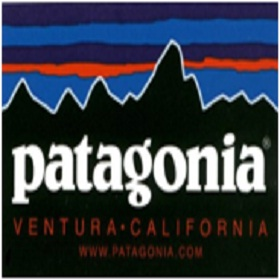

Introduction - Maintain/Repair
Maintenance is a critical activity carried out in the use phase of the product life cycle to prolong system availability.
Maintenance is the most efficient way to retain or restore equipment to its desired level of performance. Proper maintenance
has the added responsibility of protecting the equipment from further damage, personal safety and pollution prevention
(Ajukumar, Gandhi 2007).
During the product life-cycle, after-sales services and spare parts may generate more than three times the turnover of the
original purchase (Wise and Baumgartner, 1999). The change is in favour of a view that considers after-sales as a source of
competitive advantage and business opportunity (Armistead and Clarke 1992).
Maintenance offerings can include:
- Repairs
- Servicing
- Diagnostics – onsite and remote
- Technical support – documentation and personal
- Installation
- Warranty
- Courtesy replacement product whilst product is being repaired
- Cleaning/Valeting
Benefits
- Prolongs lifetime of product for the customer
- Most efficient way to retain or restore the system back to normal working conditions (Ajukumar and Gandhi, 2012)
- Source of competitive advantage and business opportunity (Armistead and Clarke 1992)
- May generate more than three times the turnover of the original purchase (Wise and Baumgartner, 1999)
- Provides protection, pollution prevention, personnel safety and waste disposal (Ajukumar and Gandhi, 2012)
Considerations
| Customer Satisfaction | Customer can have high expectations, especially when their equipment is not functioning and requires fixing quickly at an affordable price. | Delivering excellent customer service can improve customer loyalty and lead to repeat business. Customer ‘delighters’ include quick and high quality repairs, fixed pricing and offering a courtesy product replacement. |
| Competition | Competition can reduce the volume of customers and reduce margins. | Good reputation provides customer loyalty through delivering a quality service and improves the brand image. Offers can provide competitiveness and up-to-date technology can be a differentiator. |
| Quality of repair | Poor repair quality can lead to breakdown of customer’s equipment, damaged reputation and poor sales. | Quality of repairs can be improved by: repair information and guides provided by the Manufacturer, having trained personnel and having the right technology will improve the quality of repairs. |
| Speed of repair | Speed of repair can be crucial to the customer and slow repair times can lose business. | Quick repairs can secure future business and improve reputation. Having the right technology can improve time to diagnose the problems. Product design can be improved to assist maintenance/repair. |
| Organisation required to support the maintenance | New skills, processes and finances to introduce or improve the service. | Improved service to the customer can improve reputation and long-term value. Also possible to outsource some activities. |
| Waste streams from maintenance process, e.g. lubricants | Multiple waste streams can be generated, which need to be managed onsite and offsite. | Waste streams can be reused through Industrial Symbiosis, potentially for financial gain. |
Product Design
To improve maintenance, the following should be considered in the design phase, or if the product already has these features, there could be potential to offer a maintenance service:
- Easy access to parts
- Fault diagnostics
- Handling and mounting of parts
- Safety for technicians
- Part inter-changeability
- Identification of components and leads
- Access to lubrication points
- Reduced electrical connections
- Redundancy features
- Final adjustments
Case studies
-

Patagonia outdoor clothing company offer repairs to worn or damaged clothes. The clothing items can be sent to Patagonia and they will repair and return the items within 10 business working days. Link
-
Dell computers offer repairs and support for their laptops and computers. They provide step-by-step diagnostics, parts, upgrades, downloads and manuals to give the customer all the information and support to resolve their computer issues. In addition, Dell offer a repair service for any hardware issues the computers may have. Link